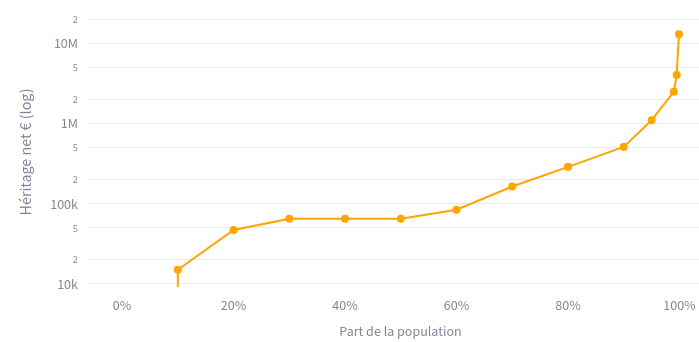

Ce site reprend l’id√©e de Thomas Picketty d’un h√©ritage pour tous √† 25 ans.
Il propose un simulateur de r√©forme qui s’appuie sur le rapport Repenser l’h√©ritage, du Conseil d’Analyse √âconomique (CAE) qui d√©montre la faisabilit√© d’un tel projet.
L’objectif est d’ouvrir un d√©bat public sur ce th√®me et d’inciter les partis politiques √† s’en emparer.
Avec le vieillissement de la population, l’age moyen de l’h√©ritage est pass√© de 30 ans au d√©but du si√®cle dernier, √† 50 ans aujourd’hui.
Les français qui héritent, héritent donc à un âge où ils sont déjà installés et ont déjà constitué un patrimoine.
C’est plus t√¥t dans la vie qu’un patrimoine de base est n√©cessaire : pour s’installer, obtenir un logement, lancer une activit√©, …
L’h√©ritage constitue aujourd’hui plus de 60% du patrimoine total des m√©nages, r√©parti de mani√®re tr√®s in√©galitaire:

Contrairement √† une id√©e re√ßue, la taxation sur l’h√©ritage est tr√®s faible et peu progressive :
La majorit√© des h√©ritages en ligne directe ne sont pas du tout tax√©s, et le taux effectif d’imposition ne d√©passe pas 10%, m√™me pour les tr√®s hauts h√©ritages (13 millions ‚Ǩ)
Si l’h√©ritage √©tait totalement √©galitaire, chaque fran√ßais h√©riterait de 370 000 ‚Ǩ
L’id√©e est de socialiser une petite partie de l’h√©ritage, pour mettre en place un h√©ritage de base, vers√© √† chaque fran√ßais au d√©but de sa vie active (25 ans par exemple).
Les travaux du CAE d√©montrent qu’il est possible de mettre en place une fiscalit√© plus progressive, qui d√©gagerait de 10 √† 20 milliards de recettes suppl√©mentaires, et permettrait de financer un h√©ritage de base de 30 √† 50 000 ‚Ǩ.
Une telle réforme serait bénéfique pour plus de 95% des français.
Voici un exemple de résultat du simulateur :
Tester le simulateur